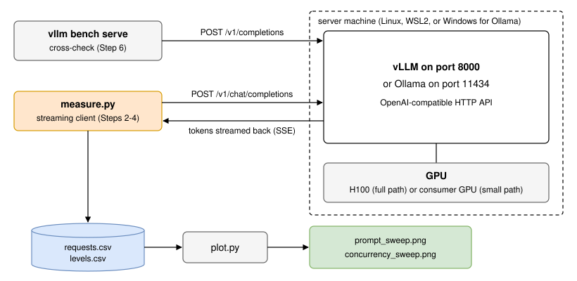
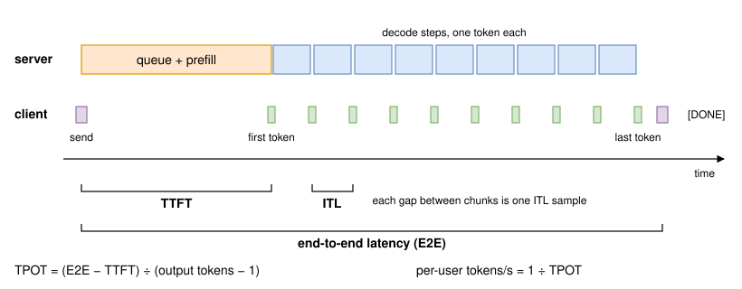
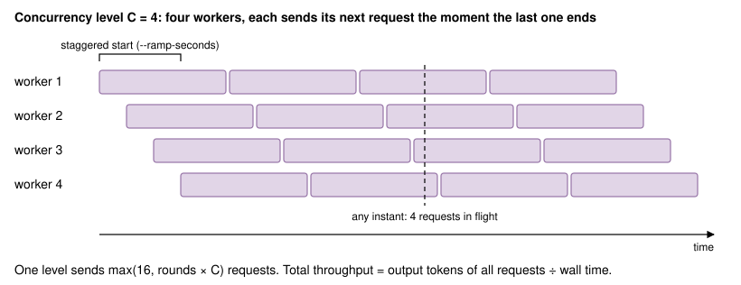
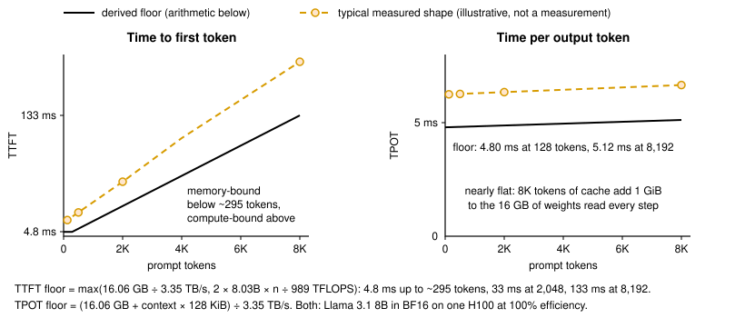
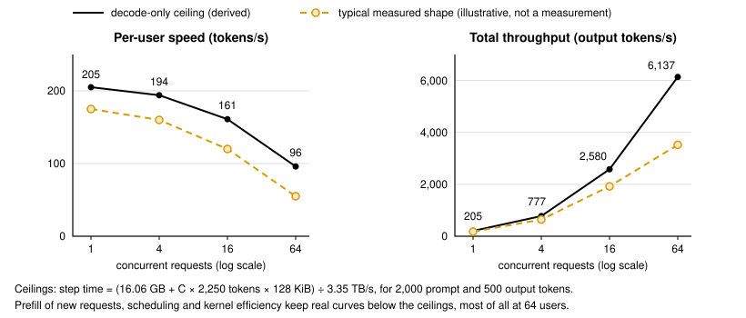
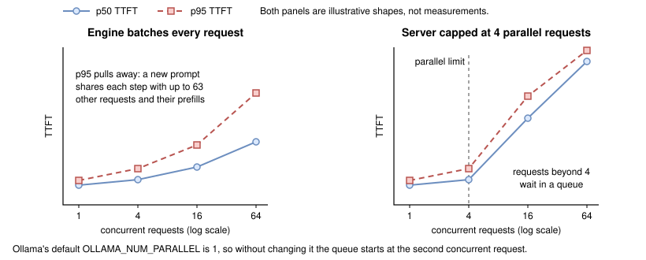
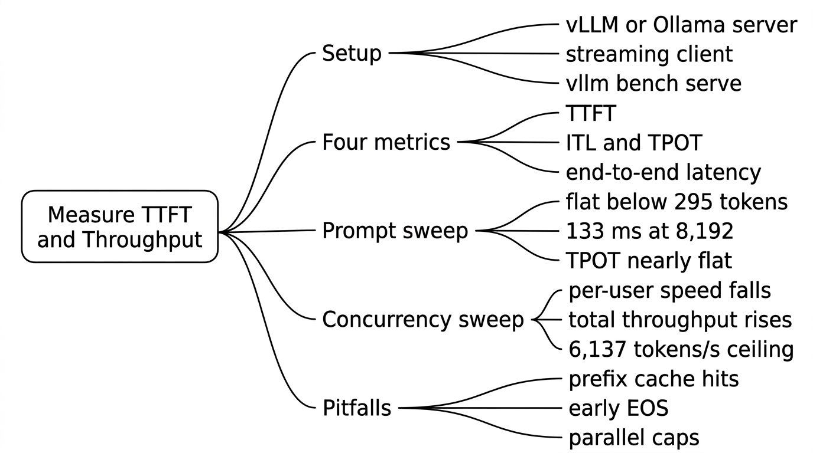

Lab - Measure TTFT and Throughput
Introduction
Lessons 2 through 5 built a model of where a served LLM spends its time. A compute-heavy prefill reads the whole prompt and produces the first token. A memory-bound decode loop then produces every other token, one step at a time, re-reading the weights and the KV cache at each step. A model is only worth having if it predicts something you can check, and in this lab we check it.
We serve an open model behind an OpenAI-compatible HTTP API, write a small streaming client that timestamps every token, and run two experiments. The first holds concurrency, the number of requests in flight at the same time, at one and grows the prompt from 128 to 8,192 tokens. The second holds the prompt fixed and raises concurrency from 1 to 64. Every request yields four numbers: time to first token (TTFT), inter-token latency (ITL), output tokens per second, and end-to-end latency. Figure 1 shows the setup.

In this lab, we start a server, build the client, run both sweeps, plot the results, and cross-check our numbers against vLLM's own benchmark tool. Before each experiment we also work out from the hardware specifications what the curves should look like, so that a surprising result stands out instead of being taken at face value.
What You Need
There are two paths through the lab. The small path runs on a laptop or desktop GPU and shows every effect at a smaller scale. The full path uses the course's running example, Llama 3.1 8B Instruct on one H100, so your numbers can be compared directly with the arithmetic in Lessons 2 to 5.
| Small path | Full path | |
|---|---|---|
| GPU | NVIDIA GPU with 8 GB or more, laptop or desktop | One H100 80 GB cloud instance |
| Operating system | Windows 11 with Ollama natively, or vLLM inside WSL2; Linux works for both | Ubuntu 22.04 or 24.04 with NVIDIA drivers |
| Server | Ollama, or vLLM on Linux/WSL2 | vLLM 0.32 |
| Model | Qwen/Qwen2.5-1.5B-Instruct in BF16 on vLLM (3.09 GB of weights), or qwen2.5:1.5b-instruct-fp16 on Ollama | meta-llama/Llama-3.1-8B-Instruct in BF16 (16.06 GB of weights; gated, accept the license first) |
| Client | Python 3.11+ with httpx, transformers (tokenizer only), matplotlib | Same |
| Time | About an hour | One to two hours |
| Cost | Nothing beyond your machine | About $6, assuming $3.00 per H100-hour for two hours |
Table 1: Hardware and software for the two paths. The H100 price is an assumption; check your provider.
Ollama's default qwen2.5:1.5b tag is a 4-bit Q4_K_M build of 986 MB. We use the -fp16 tag so that the small path, like the full path, runs a 16-bit model. vLLM needs Python 3.11 to 3.14 on Linux; on Windows, run it inside WSL2.
Step 1: Start an OpenAI-Compatible Server
All three tabs start a server that speaks the OpenAI chat completions API [1][4], so the same client works against any of them. The first tab is the full path, the second the small path on vLLM, and the third the small path on Ollama under Windows PowerShell.
# Linux or WSL2. vLLM supports Python 3.11-3.14.
uv venv --python 3.12 --seed
source .venv/bin/activate
uv pip install vllm --torch-backend=auto
vllm download-kernels # optional: precompiled kernels, faster first start
export HF_TOKEN=hf_xxx # Llama 3.1 is gated: accept its license on Hugging Face first
vllm serve meta-llama/Llama-3.1-8B-Instruct \
--max-model-len 16384 \
--gpu-memory-utilization 0.90 \
--no-enable-prefix-caching \
--port 8000 2>&1 | tee server.log
# In a second terminal:
grep -E "Model loading took|KV cache size" server.log
curl -s http://localhost:8000/v1/modelsWe set --gpu-memory-utilization 0.90 explicitly so that the cache budget matches the arithmetic of Lesson 3, KV Cache; recent vLLM releases default to 0.92.
What you should see. vLLM logs a line Model loading took … GiB memory and a line GPU KV cache size: … tokens, Maximum concurrency for 16,384 tokens per request: …x. On the full path, the weights take about 15 GiB (the checkpoint is 16.06 GB), and the cache capacity should land near the 426,000 tokens that Lesson 3, KV Cache, derives for this GPU. The /v1/models call returns a JSON list containing your model's name.
Two settings matter for measurement. vLLM enables prefix caching by default (Lesson 24, Prefix Caching). Our client sends the same prompt many times, and with caching on, every repeat would skip most of its prefill and report a TTFT far below what a fresh prompt costs. --no-enable-prefix-caching turns it off [2], and the client also puts a random tag at the start of each prompt as a second guard. On Ollama, the OpenAI-compatible API has no way to set the context window, so OLLAMA_CONTEXT_LENGTH raises it to 16,384 tokens to fit our longest prompt. Ollama's documentation notes that memory grows with the number of parallel requests times the context length [9][10]. For Qwen2.5-1.5B the cache costs 2 × 28 layers × 2 KV heads × 128 × 2 bytes = 28 KiB per token, so 4 × 16,384 tokens need 1.75 GiB, which fits easily.
Step 2: Build a Streaming Client
The client sends a chat request with stream: true and records a timestamp every time a chunk of text arrives. Figure 2 shows how the four metrics fall out of those timestamps.

Time to first token covers queueing, prefill (which itself produces the first token), and the trip back to the client (Lesson 4, Time to First Token). Inter-token latency is the gap between two consecutive chunks. Time per output token (TPOT) averages the decode phase of one request, and its inverse is that user's streaming speed (Lesson 5, Tokens per Second):
TPOT and ITL answer different questions. TPOT is a per-request average, good for "how fast does text stream". The ITL distribution exposes stalls: a single 80 ms gap in a stream of 6 ms gaps means the request waited while the engine ran someone else's prefill (Lesson 7, Continuous Batching). We store the median and 99th-percentile gap of every request. We count output tokens from the usage block that the server sends at the end of the stream rather than counting chunks, because a server is allowed to pack several tokens into one chunk. The TPOT definition matches the one in vllm bench serve, so the cross-check in Step 6 compares like with like.
For the concurrency sweep, the client runs a closed loop: C workers, each of which sends its next request the moment its previous one finishes, so exactly C requests are in flight (Figure 3). The workers start a little apart so that their requests do not all prefill and finish in lockstep.

The first tab installs the client's dependencies; the second is the whole client. It needs a Hugging Face tokenizer only to size prompts in tokens, and it never loads model weights.
python -m venv .venv-client
source .venv-client/bin/activate # Windows: .venv-client\Scripts\activate
pip install httpx transformers matplotlibThe client uses httpx directly rather than an SDK [11], so every byte between the server and the timestamps is visible. Each request starts with a fresh eight-character tag, the prompt body is a filler paragraph repeated to the target length, and the chat template's own tokens are subtracted so that the server-side prompt lands close to the target. The CSV keeps the prompt token count that the server reports, which is the number to plot.
Step 3: Sweep Prompt Length at Concurrency 1
With one request at a time there is no batching and no queue, so TTFT is almost pure prefill and TPOT is almost pure decode. We send five requests at each of four prompt lengths, each generating 128 tokens. On vLLM, --ignore-eos keeps the model from stopping early, so every request decodes exactly 128 tokens.
python measure.py --mode prompt \
--model meta-llama/Llama-3.1-8B-Instruct \
--prompt-lens 128 512 2048 8192 --output-len 128 --repeats 5 --ignore-eosWhat you should see. One line per prompt length, of the form prompt 8192: median TTFT … ms, median TPOT … ms, and 20 rows appended to requests.csv. Check two columns before looking at any latency: prompt_tokens should be within a few tokens of the target, and output_tokens should be 128 on vLLM. On Ollama, which does not support ignore_eos, output lengths can vary; TPOT still works because it is normalized per token.
What should the numbers be? Lesson 2, Prefill vs Decode, gives two floors [6]. Prefill does about 2 floating-point operations per parameter per prompt token, and it must also read the weights at least once. Decode reads the weights plus the cache at every step. For Llama 3.1 8B in BF16 on an H100 (989 TFLOPS dense BF16, 3.35 TB/s):
| Prompt tokens | TTFT floor | Bound by | TPOT floor (128 output tokens) |
|---|---|---|---|
| 128 | 4.8 ms | reading the weights | 4.80 ms (208 tokens/s) |
| 512 | 8.3 ms | compute | 4.82 ms (208 tokens/s) |
| 2,048 | 33 ms | compute | 4.88 ms (205 tokens/s) |
| 8,192 | 133 ms (151 ms with attention) | compute | 5.12 ms (195 tokens/s) |
Table 2: Derived floors for Llama 3.1 8B in BF16 on one H100 at 100% efficiency. The TPOT context is the prompt plus 64 tokens, the average over 128 output tokens.
The two TTFT terms cross at 989 ÷ 3.35 ≈ 295 tokens. Below that, prefill is memory-bound and TTFT barely moves; above it, every extra prompt token costs about 16 µs of compute, so TTFT grows in a straight line. The attention scores add a term that grows with the square of the prompt length, 2 × n² × 4,096 × 32 FLOPs, which is only 3% at 2,048 tokens but adds 18 ms, about 13%, at 8,192. TPOT, by contrast, should be nearly flat: an 8,192-token prompt adds 1 GiB of cache to read at each step, next to 16 GB of weights.
Real measurements sit above these floors. HTTP handling, tokenization, scheduling, and kernels that run below peak FLOPs all add time, so expect measured TTFT to be a multiple of the floor at short prompts and TPOT to be somewhat above 4.8 ms. What should hold is the shape: flat, then linear for TTFT; nearly flat for TPOT. On the small path the same reasoning applies with Qwen2.5-1.5B's 3.09 GB of weights and your GPU's own bandwidth and FLOPS from its specification sheet.
Step 4: Sweep Concurrency
Now we fix the request shape at the course's running example, about 2,000 prompt tokens and 500 output tokens, and step concurrency through 1, 4, 16, and 64. Each level sends eight requests per worker, with a minimum of 16 (16 at concurrency 1, 512 at concurrency 64), so that the ramp-up and drain at the edges are a small share of the run.
python measure.py --mode concurrency \
--model meta-llama/Llama-3.1-8B-Instruct \
--prompt-len 2000 --output-len 500 --concurrency 1 4 16 64 --ignore-eosWhat you should see. One printed dictionary per level and a levels.csv with one row per concurrency: requests, errors, wall time, total output tokens, throughput, p50, p95 and p99 TTFT, p50 and p95 TPOT, and median per-user tokens per second. The errors column should be zero. On the full path, the cache needs at most 64 × 2,500 = 160,000 tokens, well under the roughly 426,000 available, so vLLM should never have to preempt a request [7].
Lesson 5, Tokens per Second, explains what to expect. Every decode step reads the weights once for the whole batch, plus the cache of every request in it. Adding requests shares the 16 GB weight read among more users, so total throughput rises; but each step also reads more cache, so every user's stream slows down. With an average context of 2,250 tokens (2,000 prompt plus half of 500 output), the decode-only ceilings are:
| Concurrency | Cache read per step | Step time floor | Per-user ceiling | Total ceiling |
|---|---|---|---|---|
| 1 | 0.29 GB | 4.88 ms | 205 tokens/s | 205 tokens/s |
| 4 | 1.18 GB | 5.15 ms | 194 tokens/s | 777 tokens/s |
| 16 | 4.72 GB | 6.20 ms | 161 tokens/s | 2,580 tokens/s |
| 64 | 18.87 GB | 10.43 ms | 96 tokens/s | 6,137 tokens/s |
Table 3: Decode-only ceilings for Llama 3.1 8B on one H100, step time = (16.06 GB + C × 2,250 × 128 KiB) ÷ 3.35 TB/s
These ceilings ignore prefill, and at high concurrency that is a large omission. At 64 users each request lasts at least 500 × 10.43 ms ≈ 5.2 s, so about 12 new requests start every second. Prefilling 12.3 × 2,000 tokens per second costs about 3.9 × 10¹⁴ FLOP/s, roughly 40% of the H100's peak. vLLM mixes those prefill chunks into decode steps, which lengthens the steps that carry them. Expect the measured total throughput at 64 users to fall clearly short of 6,137 tokens/s, and expect p99 ITL to show spikes that p50 ITL hides.
On the Ollama path with OLLAMA_NUM_PARALLEL=4, levels 16 and 64 cannot run more than four requests at once. The rest wait in Ollama's queue, so throughput stops rising after 4 and TTFT climbs with the length of the queue. That is a correct measurement of a capped server, not a bug in the client.
Step 5: Plot the Results
The plotting script reads both CSV files and writes two images: prompt_sweep.png with TTFT and TPOT against prompt length, and concurrency_sweep.png with per-user speed, total throughput, and TTFT percentiles against concurrency. Per-user speed and total throughput sit on separate panels because they differ by a factor of up to 64 and should never share one axis.
"""plot.py: turn requests.csv and levels.csv from measure.py into two PNG files."""
import csv
import os
import statistics
from collections import defaultdict
import matplotlib
matplotlib.use("Agg")
import matplotlib.pyplot as plt
rows = [r for r in csv.DictReader(open("requests.csv")) if r["status"] == "ok"]
# 1) Prompt-length sweep: TTFT and TPOT against the prompt tokens the server counted.
by_len = defaultdict(list)
for r in rows:
if r["experiment"] == "prompt":
by_len[int(r["target_prompt_tokens"])].append(r)
if by_len:
lens = sorted(by_len)
x = [statistics.median(float(r["prompt_tokens"]) for r in by_len[n]) for n in lens]
fig, (a1, a2) = plt.subplots(1, 2, figsize=(10, 4))
a1.plot(x, [statistics.median(float(r["ttft_ms"]) for r in by_len[n]) for n in lens], "o-")
a1.set(title="Time to first token", ylabel="median TTFT (ms)")
a2.plot(x, [statistics.median(float(r["tpot_ms"]) for r in by_len[n]) for n in lens], "o-")
a2.set(title="Time per output token", ylabel="median TPOT (ms)")
for ax in (a1, a2):
ax.set(xlabel="prompt tokens (as counted by the server)", ylim=(0, None))
ax.grid(alpha=0.3)
fig.tight_layout()
fig.savefig("prompt_sweep.png", dpi=150)
print("wrote prompt_sweep.png")
# 2) Concurrency sweep: one panel per measure, never two y-axes on one panel.
if os.path.exists("levels.csv"):
levels = list(csv.DictReader(open("levels.csv")))
c = [int(r["concurrency"]) for r in levels]
fig, (b1, b2, b3) = plt.subplots(1, 3, figsize=(14, 4))
b1.plot(c, [float(r["user_tok_s_p50"]) for r in levels], "o-")
b1.set(title="Per-user speed", ylabel="median tokens/s per request")
b2.plot(c, [float(r["throughput_tok_s"]) for r in levels], "o-")
b2.set(title="Total throughput", ylabel="output tokens/s, all requests")
b3.plot(c, [float(r["ttft_p50_ms"]) for r in levels], "o-", label="p50")
b3.plot(c, [float(r["ttft_p95_ms"]) for r in levels], "s--", label="p95")
b3.axhline(500, color="gray", linestyle=":", label="p95 target (500 ms)")
b3.set(title="Time to first token", ylabel="TTFT (ms)")
b3.legend()
for ax in (b1, b2, b3):
ax.set_xscale("log", base=2)
ax.set_xticks(c, [str(v) for v in c])
ax.set(xlabel="concurrent requests", ylim=(0, None))
ax.grid(alpha=0.3)
fig.tight_layout()
fig.savefig("concurrency_sweep.png", dpi=150)
print("wrote concurrency_sweep.png")What you should see. Two PNG files in the working directory. The x-axis of the prompt sweep is the prompt length the server counted, not the target, so any truncation or template overhead is visible instead of hidden.
Step 6: Cross-Check with vllm bench serve
A homemade client can be wrong in ways that look plausible, so we repeat the concurrency-64 point with vLLM's own load generator. vllm bench serve sends synthetic prompts of exact token lengths, keeps a fixed number of requests in flight with --max-concurrency, and prints a summary [3]. The first tab reproduces Step 4's heaviest level; the second reproduces the 8,192-token point of Step 3.
vllm bench serve \
--backend vllm \
--model meta-llama/Llama-3.1-8B-Instruct \
--dataset-name random \
--random-input-len 2000 --random-output-len 500 \
--num-prompts 512 --max-concurrency 64 \
--temperature 0 --ignore-eos \
--percentile-metrics ttft,tpot,itl,e2el \
--metric-percentiles 50,95,99 \
--save-result --result-dir bench_resultsWhat you should see. A block headed Serving Benchmark Result with lines such as Successful requests, Failed requests, Request throughput (req/s), Output token throughput (tok/s), and then mean, median, P50, P95, and P99 values for TTFT, TPOT, ITL, and E2EL in milliseconds. With --save-result, the same numbers land in a JSON file under bench_results/.
Compare the median TTFT, median TPOT, and output token throughput with the matching row of levels.csv. Expect small differences for known reasons. The vllm backend calls /v1/completions with a raw prompt, while our client uses the chat endpoint, whose template adds a few dozen tokens. vLLM's P99 ITL pools every gap from every request, whereas our CSV stores a p99 per request. Our client also stagger-starts its workers. If the medians disagree by more than about 10%, find out why before trusting either tool: the usual culprits are prefix caching left on, a missing warmup, or a client machine that is itself saturated. On the small path, run the same commands with the Qwen model name. On the Ollama path the cross-check is optional: it needs a vLLM install, and Ollama does not list ignore_eos among its supported fields, so output lengths will vary.
For the random dataset, vllm bench serve turns ignore_eos on by itself, and a --random-range-ratio of 0 (the default) gives every request exactly the requested lengths. It no longer forces greedy sampling, so pass --temperature 0 to make runs comparable.
Reading the Results
Start with the prompt sweep. Figure 4 shows the shape to look for, with the derived floors from Table 2 drawn as solid lines and a typical measured curve, which is illustrative, drawn dashed.

If your TTFT curve is a straight line, prefill is compute-bound and the slope tells you the effective prefill speed: divide the extra tokens between two points by the extra milliseconds. Comparing that speed with the 2 × 8.03 × 10⁹ FLOPs per token in the formula gives the fraction of peak compute the engine reaches during prefill. If TTFT is flat across all four lengths, the prompts were probably served from a prefix cache or truncated; check the prompt_tokens column. If TPOT climbs steeply with prompt length, something other than weight reads dominates decode, for example a fallback attention kernel.
Next, the concurrency sweep. Figure 5 sets the decode-only ceilings of Table 3 against an illustrative measured shape.

The two panels are the same trade-off seen from two sides: the engine buys total throughput with per-user speed. The ratio of your measured total throughput to the ceiling at each level is a good single number for "how close to the hardware limit is this engine". It is usually highest at moderate concurrency and drops at 64, where prefill work and scheduling eat into decode time. A curve that flattens early, around 4 or 16, points to a cap on batch size, such as Ollama's parallel limit or a low --max-num-seqs.
The sweep also tells you how many users this GPU can carry at the course's running latency targets, p95 TTFT of at most 500 ms and p95 TPOT of at most 25 ms (at least 40 tokens/s per stream). The highest concurrency level that meets both is your measured capacity; add levels such as 32 and 48 to find the boundary more precisely. Lesson 19, GPU Utilization, estimates about 53 concurrent streams at about 21 ms per decode step for this model on an H100, or about 5 requests/s. That step time is more than twice the 9.5 ms bandwidth floor at 53 streams, because it includes prefill work and real kernel efficiency; your measurement is the check on that estimate.
Finally, compare p50 and p95 TTFT. Figure 6 shows the two typical patterns.

A batching engine admits new requests at every step (Lesson 7, Continuous Batching) [8], so TTFT grows slowly and p95 grows faster, because an unlucky request lands next to several long prefills. A capped server behaves like a queue: TTFT is fine until the cap, then grows with the number of waiting requests. Telling these two apart from the outside is exactly what queue-depth metrics are for (Lesson 29, Queue Depth), and why tail percentiles get their own lesson (Lesson 28, p50, p95 and p99 Latency).
When asked to benchmark a model server, state the floors first: "16 GB of weights at 3.35 TB/s is 4.8 ms per decode step, so about 200 tokens/s per user at best; prefill is about 16 µs per prompt token." Then say what you would measure and which result would surprise you.
Common Pitfalls
- Prefix cache hits. Repeating one prompt with caching on measures cache lookups, not prefill. Disable the cache or make every prompt unique, as the client does.
- Cold start in the data. The first requests after startup can include graph capture and kernel compilation. Always send warmup requests and throw them away.
- Counting chunks as tokens. A server may send several tokens in one chunk. Take token counts from the
usageblock, and check thatoutput_tokensmatches what you asked for. - Early stops. Without
ignore_eos, a model can finish after 40 tokens of a requested 500, which inflates throughput per request and shortens E2E. Look at theoutput_tokenscolumn before comparing runs. - Silent context limits. Ollama's default context is 4K tokens on GPUs with less than 24 GiB, so an 8K prompt does not fit unless you raise
OLLAMA_CONTEXT_LENGTH. Confirm thatprompt_tokensmatches the target. - Comparing unequal precisions. Ollama's default tags are 4-bit; vLLM serves BF16 unless told otherwise. Compare engines only with the same weights and precision (Lesson 12, Lab - Benchmark Two Engines at 50 Concurrent Users).
- A saturated client. One Python process handles 64 streams easily with
asyncio, but a laptop on battery, or a client far from the server, adds its own latency. Run the client on the server machine or in the same zone. - Ramp and drain. Total throughput divides by wall time, which includes the first wave starting and the last requests finishing alone. Eight rounds per level keeps that edge effect small; very short runs overstate it.
Stretch Goals
- Restart vLLM with
--kv-cache-dtype fp8and rerun concurrency 64. The cache read per step halves, so the 64-user step-time floor drops from 10.43 ms to about 7.6 ms; see whether your measurement moves by a similar ratio. - Re-enable prefix caching, give every request the same 1,500-token system prompt, and watch TTFT at concurrency 1 fall, since only the uncached remainder of each prompt needs prefill (Lesson 24, Prefix Caching).
- Vary
--max-num-batched-tokens, which sets how many tokens one engine step may process, and observe the trade between TTFT and p99 ITL that chunked prefill creates [5]. - Replace the closed loop with open-loop arrivals:
vllm bench serve --request-rate 8sends requests as a Poisson process whether or not earlier ones finished, which is closer to real traffic. - Add
--goodput ttft:500 tpot:25tovllm bench serveto count only requests that met the course's TTFT and TPOT targets, the first step towards the SLA sizing in Lesson 21, Lab - GPUs for 1,000 Requests per Minute Under a 2s SLA.
Summary

- A streaming client that timestamps each chunk yields TTFT, ITL, TPOT, and end-to-end latency; token counts come from the server's
usageblock. - At concurrency 1, TTFT is flat below about 295 tokens and then grows linearly; for Llama 3.1 8B on an H100 the floor is 33 ms at 2,048 tokens and 133 ms at 8,192.
- TPOT barely depends on prompt length: the floor goes from 4.80 ms to 5.12 ms because 16 GB of weights dominate each step's reads.
- Raising concurrency trades per-user speed for total throughput; the decode-only ceilings are 205 tokens/s for one user and 6,137 tokens/s in total for 64.
- Prefill of new requests uses about 40% of the H100's peak compute at 64 users, so measured throughput falls well short of the decode-only ceiling.
- The highest concurrency that meets p95 TTFT ≤ 500 ms and p95 TPOT ≤ 25 ms is the GPU's measured capacity; Lesson 19 estimates about 53 streams for this setup.
- Prefix caching, warmup, early EOS, context limits, and parallel caps all distort results;
vllm bench serveis an independent cross-check.
Reference Material
[1] vLLM documentation: OpenAI-Compatible Server. https://docs.vllm.ai/en/latest/serving/openai_compatible_server/.
[2] vLLM documentation: vllm serve CLI reference. https://docs.vllm.ai/en/latest/cli/serve/.
[3] vLLM documentation: vllm bench serve CLI reference. https://docs.vllm.ai/en/latest/cli/bench/serve/.
[4] Ollama documentation: OpenAI compatibility. https://docs.ollama.com/api/openai-compatibility.
[5] Agrawal et al. Taming Throughput-Latency Tradeoff in LLM Inference with Sarathi-Serve. https://arxiv.org/abs/2403.02310.
[6] Pope et al. Efficiently Scaling Transformer Inference. https://arxiv.org/abs/2211.05102.
[7] Kwon et al. Efficient Memory Management for Large Language Model Serving with PagedAttention. https://arxiv.org/abs/2309.06180.
[8] Yu et al. Orca: A Distributed Serving System for Transformer-Based Generative Models. https://www.usenix.org/conference/osdi22/presentation/yu.
[9] Ollama documentation: FAQ (concurrent requests and environment variables). https://docs.ollama.com/faq.
[10] Ollama documentation: Context length. https://docs.ollama.com/context-length.
[11] HTTPX documentation: Async support. https://www.python-httpx.org/async/.
![ask alex]()
![ask alex expend]()